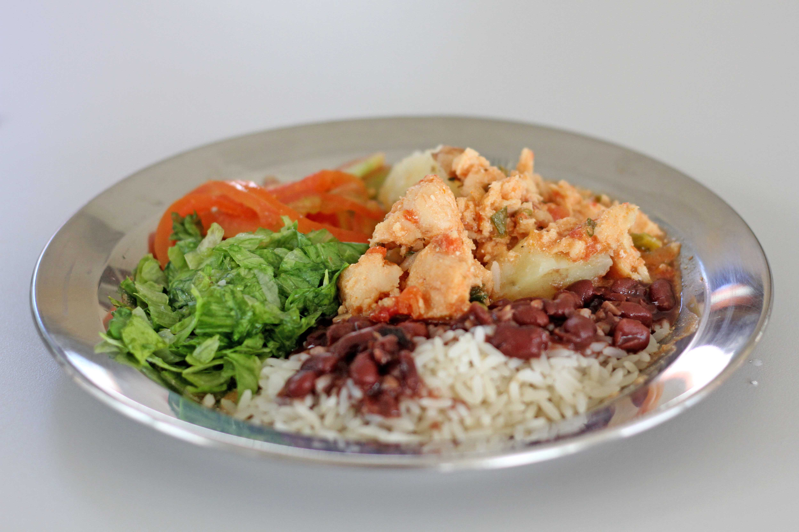
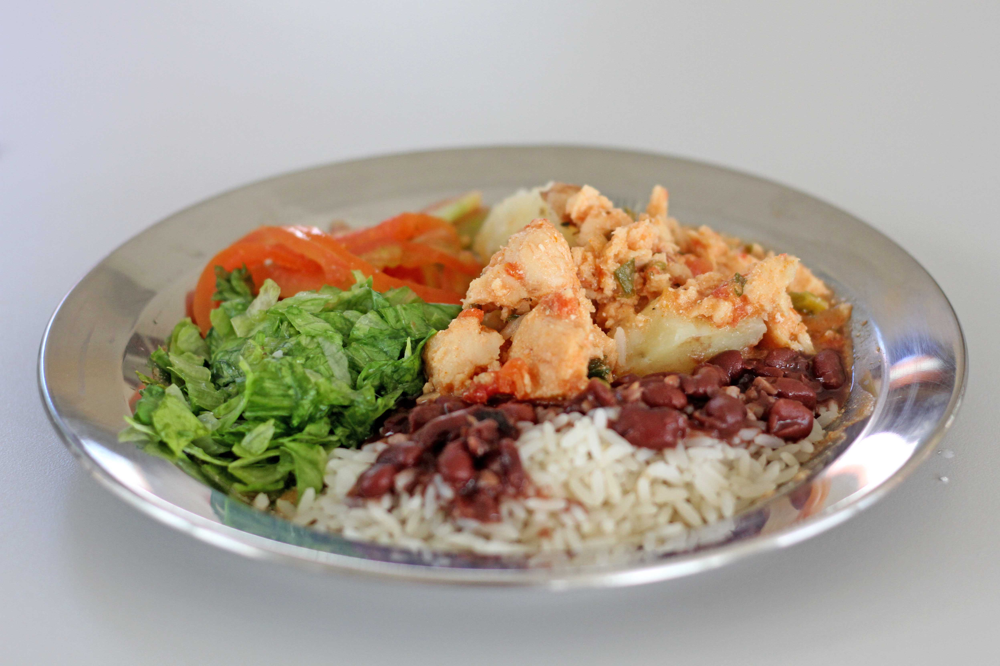

O que é?
A alimentação escolar tem como objetivo ofertar refeições nutricionalmente adequadas para o estudante que possam contribuir para sua aprendizagem, rendimento escolar e desenvolvimento biopsicossocial. Além disso, as ações de educação alimentar realizadas para as crianças contribuem para a formação de hábitos alimentares saudáveis
Todas as refeições são produzidas respeitando os princípios e regras do Programa Nacional da Alimentação Escolar. Nesse sentido, oferece porções semanais de frutas e hortaliças e são restritas de alimentos processados ou ultraprocessados conforme Resolução CD/FNDE nº 06, de 08 de maio de 2020.
Os cardápios também são adaptados para atender aos estudantes diagnosticados com necessidades alimentares especiais tais como doença celíaca, diabetes, hipertensão, anemias, alergias e intolerâncias alimentares, dentre outras.
A produção dos alimentos para as escolas municipais urbanas tanto para as com atendimento em tempo integral quanto parcial é realizada de forma centralizada na Unidade Central de Produção de Alimentos e é transportada para as escolas para que sejam servidas aos alunos.
Atualmente são atendidas 24 escolas municipais do situadas no perímetro urbano do município, sendo que destas 11 escolas contam com atendimentos de parte dos alunos em tempo integral.
 

Quem pode acessar
A alimentação escolar é direito dos alunos da educação básica pública e dever do Estado e será promovida e incentivada com vista ao atendimento das diretrizes estabelecidas na Lei Federal nº 11947 de 16 de junho de 2009.
Como acessar
Entende-se por alimentação escolar todo alimento oferecido no ambiente escolar, independentemente de sua origem, durante o período letivo.
Para atendimento dos alunos com necessidades alimentares especiais, os responsáveis devem apresentar o laudo de diagnóstico para a escola, para que a mesma encaminhe juntamente com o formulário padrão para a nutricionista responsável.
Contato
Luiz C. Bazei – Diretor da Unidade Central de Produção de Alimentos: (45) 3196-2361
Fernanda M. Galvão – Nutricionista da alimentação escolar período parcial: (45) 3196-2366
Maria I. S. Bonaldo – Nutricionista da alimentação escolar período integral e restrições: (45) 3196-2365